Vision Transformer
Contents
Vision Transformer#
Abstract#
Transformer 구조는 NLP task에서 굉장히 많이 쓰이지만 Vision task에서는 많이 사용되지 않음.
Vision에서는 Attention을 ConvNet에 결합해서 사용하거나 ConvNet의 일부분을 교체하여 사용함.
이 논문은 Attention 기법이 더 이상 CNN에 의존 할 필요가 없다는 것을 보여줌.
순수 Transformer를 image patch에 적용했을 때 Image classification 분야에서 좋은 성능을 냄.
대량의 dataset으로 pretrain 하고 소량의 특정 dataset으로 학습시키면 SOTA CNN보다 더 좋은 결과를 얻을 수 있고, 학습에 필요한 연산 리소스도 더 적다.
학습 후 용량은 대략 300MB 정도 됨.
1. Introduction#
Transformer는 연산 효율과 확장성 때문에 모델과 데이터셋이 계속 커져도 saturation이 발생하지 않음.
Transformer가 CNN 전체를 대체하기도 했었는데, 이 방법은 이론적으로는 효율적이지만, 특별한 Attention 패턴을 사용하기 때문에 하드웨어 가속기에서 효율적으로 확장 되지 못함.
이 논문은 최소한의 수정을 거친 Transformer 구조를 이미지에 직접 적용하기 위해 이미지를 패치로 나누고, 이 패치들의 선형 임베딩 시쿼스를 Transformer에 입력으로 제공했음, 그리고 Supervised 방식으로 image classification을 학습함.
Transformer는 CNN이 가진 Traslation Equivariance(변환 등변성)과 Locality(지역성) 등의 Inductive Bias를 안가지고 있기 때문에 training dataset의 양이 적으면 모델이 일반화 되지 않음.
ImageNet과 같은 작은 데이터셋으로 학습하면 CNN 모델의 성능이 더 좋지만, Inductive Bias를 무시할 수 있을 정도의 JFT-300M과 같은 큰 데이터셋으로 pretraining 하고 해결하려는 과제의 데이터셋에 transfer 시켰을 때에는 ViT(Vision Transformer)가 SOTA CNN 모델보다 더 좋은 성능을 냄.
3. Method#
NLP Transformer가 굉장히 효율적으로 구성되어 있어서 Image에도 즉시 적용 가능 하기 때문에 original-Transformer에 최대한 가깝게 모델을 디자인함.
1) Vision Transformer(ViT)#
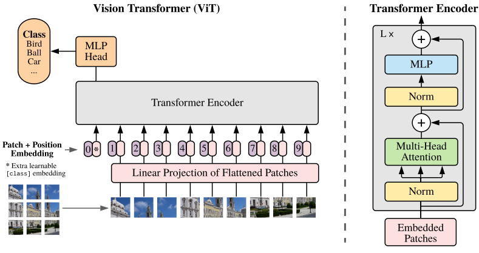
Transformer는 1차원 임베딩 토큰 시퀀스를 입력으로 받음.
Image를 Transformer의 입력으로 주기 위해
Image를 패치단위로 나눔. \(\mathbf{x} \in \mathbb{R}^{H\times W\times C}\) ⇒ \(\mathbf{x} \in \mathbb{R}^{N\times(P^2\centerdot C)}\) ,이때 \(N = HW/P^2\) H=높이, W=길이, C=채널, P=패치 해상도, N=패치 개수(입력 시퀀스의 길이)
class PatchEmbed(nn.Module): def __init__(self, img_size, patch_size, in_chans=3, embed_dim=768): super(PatchEmbed, self).__init__() self.img_size = img_size self.patch_size = patch_size self.n_patches = (img_size // patch_size) ** 2 self.proj = nn.Conv2d( in_channels=in_chans, out_channels=embed_dim, kernel_size=patch_size, stride=patch_size, ) # Embedding dim으로 변환하며 패치크기의 커널로 패치크기만큼 이동하여 이미지를 패치로 분할 할 수 있음. def forward(self, x): x = self.proj(x) # (batch_size, embed_dim, n_patches ** 0.5, n_patches ** 0.5) x = x.flatten(2) # 세번째 차원부터 끝까지 flatten (batch_size, embed_dim, n_patches) x = x.transpose(1, 2) # (batch_size, n_patches, embed_dim) return x # 출처 : https://visionhong.tistory.com/25
각 패치를 flatten(평면화) 시킴.
Transformer는 모든 layer에 크기가 D인 상수 latent vector를 사용하기 때문에 Linear Projection(선형투영)을 사용하여 D차원으로 매핑.
Linear Projection의 결과물을 패치 임베딩으로 사용.
BERT의 class 토큰과 비슷하게 임베딩된 패치들 맨앞에 학습 가능한 임베딩을 붙임.
이 임배딩 벡터\((\mathbf{z}^0_{0}=\mathbf{x}_{class})\)는 Transformer의 여러 Encoder층을 거쳐 최종 output\((\mathbf{z}^0_L)\)으로 나올 때, 이미지에 대한 Representation Vector의 역할을 수행함.
Classification Head → Pretraining 중 일 때는 1개의 Hidden Layer를 가진 MLP로 구현됨. → Fine-tuning 중 일 때는 1개의 Linear Layer로 구현됨.
임베딩에 위치정보를 포함시키기 위해 학습 가능한 Position embedding을 패치 임베딩에 추가함. → 이 때, Position Embedding은 1D position embedding을 사용함, 2D는 성능 향상이 없었기 때문.
위의 방법들로 구성된 최종 임베딩 벡터 시퀀스는 Encoder 의 입력이 됨.
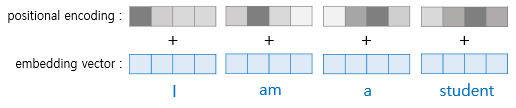
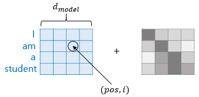
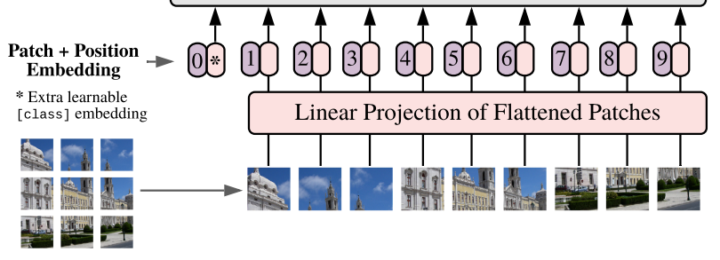
Transformer의 입력은 시퀀스이기 때문에 분홍 부분이 낱개로 표현되어 있어도 1개로 보면됨.
각 각의 분홍색 앞에 붙은 숫자가 적힘 보라색이 Position Embedding.
*표시가 되어있는 분혹색이 Learnable Embedding이 되고 여기에도 Position Embedding이 붙음.
그림에서도 볼 수 있듯이 Transformer Encoder는 Multi-head self-attention블록과 MLP 블록의 교차 레이어로 구성됨
Layer Norm은 모든 블록 이전에 적용되고, Residual connection은 모든 블록 이후에 적용됨.
MLP는 비선형 GELU 가 있는 2개의 Layer로 구성됨.
class MLP(nn.Module): def __init__(self, in_features, hidden_features, out_features, p=0.): super(MLP, self).__init__() self.fc1 = nn.Linear(in_features, hidden_features) self.act = nn.GELU() self.fc2 = nn.Linear(hidden_features, out_features) self.drop = nn.Dropout(p) def forward(self, x): x = self.fc1(x) x = self.act(x) x = self.drop(x) x = self.fc2(x) x = self.drop(x) return x # 출처 : https://visionhong.tistory.com/25
Inductive bias(=유도 편향)#
ViT는 CNN보다 이미지별 Inductive bias(유도편향)이 적음.
Why?
이미지를 패치로 나누는 과정과 Fine-tuning 과정에서 position embedding을 조절 할 때만 사용되기 때문.(The two-dimensional neighborhood structure가 사용됨)
위의 두 과정을 제외하면 self-attention이 글로벌하게 사용되기 때문.
CNN에서는 locality, two-dimensional neighborhood structure와 translation equivariance 등 지역적 관계성(local relation)을 기반으로하는 Inductive bias가 모델 전체에 걸쳐 사용됨.
Position Embedding 은 패치들의 2D position에 대한 정보를 제공하지 않음. 패치들 사이의 공간적 관계성은 처음부터 학습되어야 함.
Hybrid Architecture#
입력 시퀀스는 이미지를 CNN을 통과시켜 나온 feature map으로 만들어짐.
특별한 경우 패치의 공간 크기가 1x1이 될 수 있는데, 이는 입력 시퀀스가 feature map의 공간 차원을 평면화하고 Transformer 차워에 projection 함으로써 얻어진다는 것을 의미함.(?? 무슨말??)
Classification input embedding 과 position Embedding은 위에서 말한 것과 같음. → Encoder를 통과해서 나온 값에 Norm을 적용함. → 시퀀스 가장 앞에 붙였던 class token 만 따로 때서 classification head에 넣어줌. why? class token이 이미지 전체의 embedding을 표현하고 있음을 가정하기 때문.
2) Fine-tuning and higher Resolution#
일반적으로 ViT는 큰 dataset에 pre-train시키고 후속 과제에 fine-tuning 시킴.
fine-tuning 과정에서 pretrain된 prediction head를 제거하고 0 initialized DxK feedforward layer를 부작함.(K는 fine-tuning 하는 dataset의 클래스 수)
pretrain 했을 때보다 높은 해상도의 dataset을 쓰면 더 좋기 때문에 이 논문에선 fine-tuning시 pretraining dataset 보다 큰 해상도의 dataset으로 진행함.
고해상도 이미지를 입력할 때 patch size는 똑같이 유지되므로 입력 시퀀스가 더 길어짐.
ViT는 어떠한 길이의 시퀀스도 처리할 수 있지만 pretrained position embedding의 기능을 잃게 됨.
→ 이를 극복하고자 원본 이미지의 위치를 기준으로 하는 2D interpolation이 pretrained position embedding에 적용 됨.위와 같은 해상도 조정과 patch extraction이 이미지의 2차원 구조에 대한 inductive bias가 수동으로 ViT에 주입되는 유일한 지점임.
4. Experiments#
ResNet, ViT 그리고 Hybrid의 성능을 검증하기 위해 다양한 사이즈의 데이터셋에 pretrain 하고 벤치마크 task를 통해 검증함.
ViT는 대부분은 Recognition 벤치마크에서 적은 pretrain 비용으로 SOTA를 달성함.
최근에는 Self-Supervision을 이용하여 실험을 했는데, 이 실험 결과는 Self-Supervised ViT가 미래에 대한 가능성을 가짐을 보여줌.
5. Dataset#
모델 확장성(Scalability)를 알아보기 위해 여러가지 데이터셋을 사용함.
ILSVRC-2012 ImageNet dataset(이하 ImageNet)
클래스 : 1K
이미지 : 1.3M
ImageNet-21k
클래스 : 21K
이미지 : 14M
JFT
클래스 : 19K
이미지(고해상도 이미지) : 303M
⇒ 위 데이터셋을 사용하여 후보 모델들을 pretrain하고 다양한 벤치마크 task에 transfer 하여 모델 성능을 측정함.
벤치마크 데이터 셋
ImageNet → pretrain에서 사용한 데이터들은 제외한 남은 holdout set으로 평가함.
ImageNet ReaL
CIFAR-10/100
Oxford-IIIT Pets
Oxford Flowers-102
19개의 VTAB 분류 과제를 사용하여 검증.
VTAB은 task당 1000개의 훈련 데이터를 사용하여 작은 데이터로 transfer 성능을 검증함.
Task들은 3개의 그룹으로 나뉨
Natural - 위의 Pet와 CIFAR와 같은 task
Specialized - 의료 및 위성 이미지
Structured - 지역성과 같은 지리적 이해를 요구하는 task
6. Model Variants#
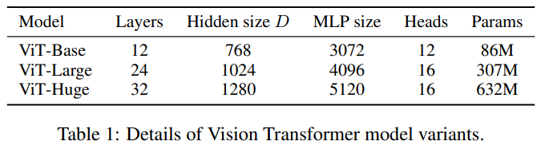
BERT의 구성요소를 base로 하였고, ViT-Base와 ViT-Large는 BERT와 완전 동일함.
더 큰 규모의 모델인 ViT-Huge도 추가함.
네이밍 방법
ViT-L/16 → Patch size 16 * 16을 사용하는 Large 모델
Transformer의 시퀀스 길이는 Patch size 제곱에 반비례 함 그러므로 작은 patch size를 쓰는 모델은 연산 비용이 더 비쌈.
Baseline CNN으로 ResNet을 사용하는데 Batch Normalization을 Group Normalization으로 교체하고 표준 Convolution을 사용함.
위와 같은 작은 수정을 거침으로서 transfer 성능이 올라가고 이런 수정된 모델 (modified model)을 ResNet(BiT - BigTransfer)라고 함.
BiT - 큰 데이터셋을 transfer learning을 위해 pretrain 시키는 것.
Hybrid에서는 CNN의 중간 Feature map들을 1x1 patch size로 쪼개어 ViT에 넣어줌.
7. Comparison to State Of The Art#
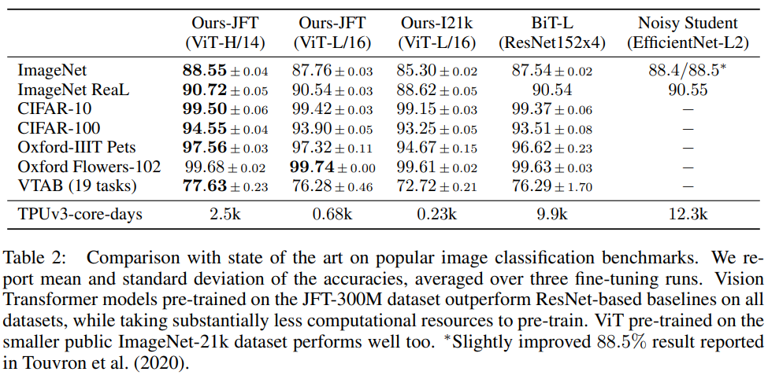
ViT-H/14 와 ViT-L/16을 SOTA CNN 모델들과 비교해봄.
Large ResNet
Supervised Transfer Learning을 적용한 BiT 모델
Large EfficientNet
Label이 없는 ImageNet과 JFT300M 데이터셋을 Semi-Supervised Learning으로 학습한 모델
JFT300M으로 pretrain 된 ViT-L/16 모델은 모든 task에서 BiT-L 보다 좋고, 연산 비용도 훨씬 낮음.
ViT-H/14 는 더 까다로운 데이터셋인 ImageNet과 CIFAR-100 그리고 VTAB에서 성능이 더욱 향상됨.
ViT 중 가장 큰 Huge 모델도 SOTA와 비교했을 때 pretrain 비용이 더 낮음.
8. Pre-training Data Requirements#
Dataset Size가 얼마나 큰 영향을 미치는 지를 보기 위해 2개의 실험을 함.
ViT 모델을 점점 사이즈가 증가하는 Dataset으로 학습 시킴.
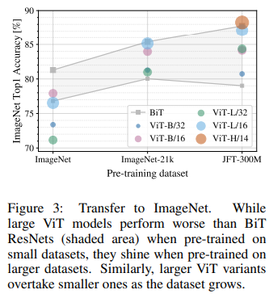
ImageNet → ImageNet 21K → JFT300M
작은 데이터셋에서 성능을 끌어올리기 위해 Weight Decay, Dropout, label Smoothing(정규화)을 적용함.
ImageNet과 같은 작은 데이터셋에선 ViT-B가 ViT-L보다 좋은 성능을 보여줌.
ImageNet21K의 경우 ViT-L과 B 모델의 성능이 비슷함.
JFT로 학습해야 Large 모델의 이점을 볼 수 있음.
ImageNet에선 BiT가 ViT보다 성능이 좋지만, JFT에선 ViT가 앞섬.
Full JFT300M 데이터셋과 그 하위 데이터셋인 9M, 30M, 90M으로 학습 시킴.
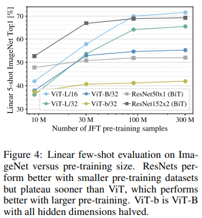
모든 setting에 대해서 같은 hyper-parameter를 사용하여 규제의 효과가 아니라 본질적인 모델의 성능 평가를 함.
작은 데이터셋에선 ViT가 비슷한 크기의 BiT 보다 더 과적합됨.
ViT-B/32는 ResNet50 보다
조금 더 빠름
9M에서는 성능이 더 안 좋음
90M 보다 큰 데이터셋에선 성능이 더 좋음
이 결과는 Convolution Inductive Bias가 작은 데이터셋에서는 유용하지만, 큰 데이터셋에선 데이터로부터 직접적으로 유의미한 패턴을 학습하는 것으로 충분했고 심지어 Inductive Bias보다 유용함.
9. Scaling Study#
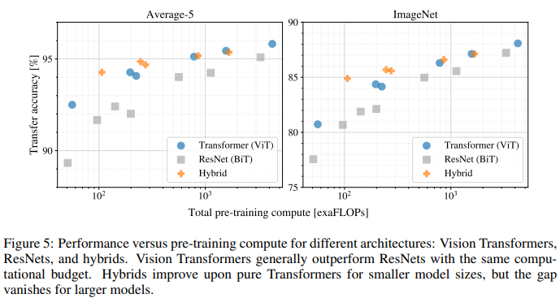
JFT300M에서 Transfer 성능을 평가하고 model performance VS Pretrain cost 를 비교 평가함.
BiT 모델 7개, Hybrid 모델 5개, ViT 모델 6개를 사용함.
위 그림을 보면 몇가지 특징을 알 수 있음.
ViT는 성능/연산 Trade-Off에서 ResNet을 압도함.
→ ViT는 ResNet보다 2 ~ 4배 낮은 연산을 하면서 같은 성능을 냄.Hybrid가 작은 연산 비용에선 ViT를 앞서지만 큰 연산 비용에선 차이가 없어짐.
→ 이 사실은 Convolution local feature processing이 ViT model size에 상관없이 도움을 준다는 것을 알 수 있음.ViT는 이 논문을 쓴 연구원들이 시도했던 범위 내에선 Saturation이 나타나지 않았음.
→ 모델 사이즈 키움으로써 더 성능을 높힐 수 있음
10. Inspecting Vision Transformer#
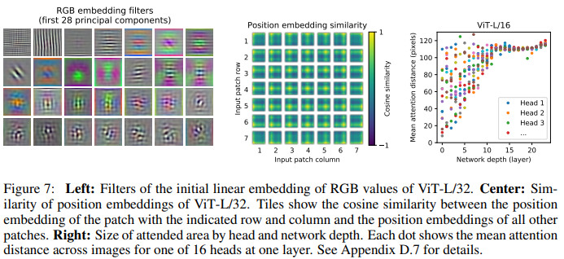
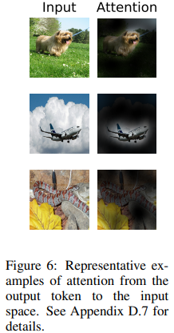
ViT가 이미지를 어떻게 처리하는지 알기 위해 내부 representation들을 분석함.
ViT의 첫 번째 Layer는 Flatten된 Patch들을 저차원 공간에 Linearly-project(선형투영)함.
Projection 후에 학습된 Position Embedding이 patch representation에 추가됨.
위 그림(중앙)은 모델이 postion Embedding의 유사성으로 이미지 내에서 거리를 인코딩하는 방법을 학습하는 것을 보여 줌. 즉, 가까이 있는 patch 일수록 position embedding이 더 유사한 경향이 있음.
위 그림(중앙)을 보면 같은 row나 column에 있으면 비슷한 Embedding을 가지는 것을 알 수 있음.
ViT는 Self-Attention을 이용해서 최하층 layer(Input layer 다음 층)에서도 전체 이미지 정보를 통합 할 수 있음. 그래서 이 논문에선 네트워크가 Self-Attention을 어느정도 사용하는지 알아봄.
Attention weight를 기반으로 정보가 통합되는 이미지 공간의 평균 거리를 계산 함(그림7 오른쪽). 이 때 이 “Attention Distance”는 CNN의 수용 필드 크기 개념과 비슷함.
그림7의 오른쪽을 보면 몇몇 Head들은 이미 가장 낮은 layer에서 대부분의 이미지에 attend(집중)한다는 것을 발견 했는데 이것은 전체적인 정보 통합 기능이 모델에서 실제로 사용되고 있음을 보여줌.
하위층에서 몇 몇 Head들은 작은 거리를 갖는데, 이런 고도의 Localized Attention 은 Hybrid 모델에서 덜 나타남.
Localized Attention 은 CNN의 초기 Conv layer와 비슷한 기능을 하는 것을 알 수 있음.
실제로 모델이 분류에 의미적으로 관련 있는 영역에 Attend 한다는 사실을 발견함.
11. Conclusion#
ViT는 이전 연구들과는 다르게 초기 patch 추출 단계를 제외하고는 모델 구조에 Image Inductive Bias가 적용되지 않음.
Image Inductive Bias를 적용하지 않는 대신에 이미지를 Patch 시퀀스로 만들고 표준 Transformer Encoder에 넣어 처리함.
ViT는 SOTA 와 성능이 비슷하거나 더 좋지만, pretrain 비용은 상대적으로 낮음.
ViT의 연구 성과와 Carion의 연구(논문 링크)가 결합되면 Detection과 Segmentation에도 적용할 수 있을 것 같다고 함.
[Reference]
https://kmhana.tistory.com/27
https://visionhong.tistory.com/25
https://velog.io/@changdaeoh/Vision-Transformer-Review
Author by 임중섭
Edit by 김주영